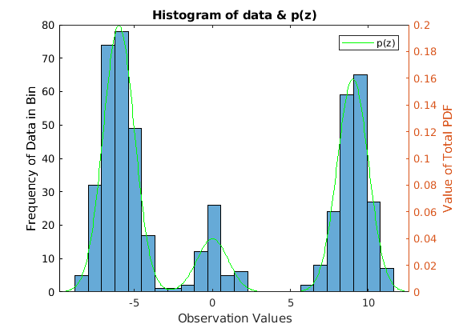

close all; clear all; clc;
mu = [-6 0 9];
sigma = [1,1,1];
pi_true = [0.5,0.1,0.4];
P = 10000;
mu_k = 1;
sigma_k = 20;
pi_k = 1;
k = 10;
N = 500;
x_n = zeros(1, N);
i = 1;
while(i < N)
z_0 = normrnd(mu_k, sqrt(sigma_k));
k_q = k*pi_k*normpdf(z_0, mu_k, sqrt(sigma_k));
u_0 = k_q*rand();
p_z = pi_true*normpdf(z_0, mu', sqrt(sigma)');
if (u_0 <= p_z)
x_n(i) = z_0;
i = i+1;
end
end
figure
histogram(x_n,24)
yyaxis left;
xlabel('Observation Values')
ylabel('Frequency of Data in Bin')
hold on
yl = ylim;
xl = xlim;
xplot = linspace(xl(1),xl(2),N);
yyaxis right;
ylabel('Value of Total PDF')
totalpdf2 = pi_true*normpdf(xplot,mu',sqrt(sigma)');
h2 = plot(xplot,totalpdf2,'g');
title('Histogram of data & p(z)')
legend(h2,'p(z)')
hold off
